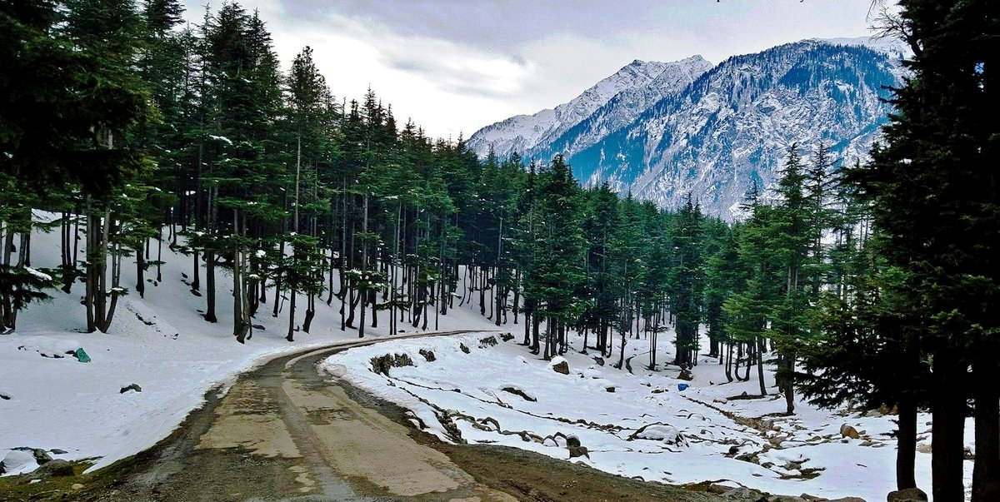
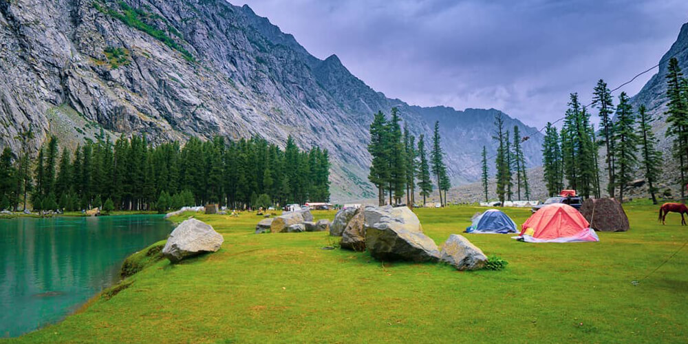

Destination Guide
Destination 1
Explore Kalam Valley
All the things you need to know
Kalam consists of a beautiful Kalam River. The stunning Kalam Rivers in Kalam are formed by melting snow within the mountain. According to local folklore, these rivers have homes for restoration. This Valley is like a paradise for tourists and the beautiful sub-valleys of Swat. Kalam Valley is placed at about 260-270 kilometers from Islamabad 100km from Mingora and 30 to 35 km from Bahrain. It is famous for its stunning streams, cool waterfalls cold lakes with lush mountains.

Why is Kalam Valley famous?
The valley is home to some of the most unique flora and fauna species, making it a must visit for nature lovers. Kalam Valley has become increasingly popular among tourists due to its mesmerising beauty and its proximity to other tourist spots in Swat.

How to reach Kalam Valley from Swat & Islamabad?
The most efficient route of getting to Kalam via road is by using Kalam Road. Kalam Road (the Route N-95) that takes the motorist to Mingora, Swat. The road follows the Swat Riverbank and will bring you to Kalam when you pass through Charbagh, Maglor, Khwazakhela, Bahrain, and Madyan. If you’re traveling in the direction of Islamabad, Lahore, or any other city in Pakistan. In this case, you’ll need to take a trip from Islamabad to the Mardan interchange using the M-1 motorway that is about a one-and-a-half-hour drive. From Mardan then, you’ll arrive at Mingora after traveling 112 kilometers. In all the drive from Islamabad to Mingora is approximately 250 km and, with just a single break for refreshments to get there, you’ll be at Mingora in five hours.


Things to do in Kalam Valley
There are many activities to enjoy in Kalam for visitors e.g. boating, horse riding fishing, rafting, camping into the most popular activities in the Kalam valley. Tourists from all over the globe set out to discover Mahodand Lake. 35 km from Kalam in jeeps takes about 3 hours. However, it is worth a visit to Swat Valley. The Trout Fish Point is the main attraction when you visit Kalam Valley. Another thing you can explore during your visit to Kalam is to attend the Kalam festival, also known as Kalam Mela, which is called Kalam mela, which is also known as Swat Summer Festival. Kalam Summer festival can be described as a spectacular display of both recreational and cultural celebrations that take place every year during July and August.
During the time of the holidays during summer, the grand Kalam festival draws visitors and residents from Pakistan and around the world to enjoy and celebrate holidays in the frigid winter weather. Kalam Summer Festival is a one-week event that includes paragliding, handicrafts from the local area jeep rallies cycling, canoeing, traditional shows, local music and dance performances, food stalls, and more. If we are talking about the Cuisine of Kalam Chapli Kabab, Broast and tikka are delicious to try.
Tourist Attractions in Kalam Valley
The Kalam Bazar (The Downtown)
Kalam Bazaar Kalam Bazaar is the main market and the commercial center within the Kalam valley. Although it is small, Kalam Bazaar has hotels and restaurants, cafes medical stores, as well as numerous general shops. The Bazaar functions as an avenue of high-end shopping or Downton for tourists and locals in Kalam and surrounding regions.

Destination 2
Ushu Forest
Beautiful Forest at Kalam Valley
Ushu Forest is famous for its spectacular clouds and rainy weather. Tourist attractions Mahodand Lake are located just 27 kilometers (17 miles) from it. In winter there is a famous Ushu glacier block the sole route that leads to Mahodand Lake and the path is only opened during summer when the glacier’s snow melts and the authorities wash off any snow remaining on the road.
How to reach Ushu Forest from Mingora, Swat Valley?
It is located 8 km away from Kalam Valley Swat and 123 kilometers from Mingora situated at an altitude of 2,300 feet. You can cover approximately 113 km in only 6 hours 21 minutes to reach Ushu at the distance of Mingora. Ushu is accessible via a non-metallized road from Kalam via jeeps, only. At Kalam, Ushu is 13 miles away. This accounts for about one hour or more of driving. You can get to Ushu by following the same route which leads to Matiltan. Between Kalam, to Ushu the hike takes about five hours, which is quite difficult, and only experienced hikers can complete this trail. If you’re not interested in trekking, you don’t need to be concerned about the area being missed because you can simply get around by car and enjoy the scenic suburbs of Kalam along the way.
Ushu Forest in Winter
In Northern Kalam, there is an area of 6 km in width in which two rivers, Ushu as well as Utrot meet (one from the northeast and the other from the west). It is located 10km from Kalam and 3200 m over sea level. It is primarily Muslims who reside in the region who are fluent in Kashmiri, Pushto, Persian, and Punjabi. Some mountains are well-known for their hiking. Since winter’s weather is extremely cold, the people usually are shut off during winter months and then move southwards, only to return to their homes when the weather is good typically in the spring. In Ushu, tourism has been the primary source of income to date.

Things to do in Ushu Forest
Tourists love this Valley to enjoy stunning views as well as fishing, hiking, and even trekking. The clean lakes that flow from Lake Mahodand, the dense green forest of Ushu, and the flowing as well as turning Kalam Falls make this tranquil beauty an ideal location for honeymooners.

Attractions at Ushu Forest
In winter, the Ushu glacier blocks the solitary road from end to end the Mahodand Lake. This route is opened only in the summer after the melting of glacier’s snow, and the authorities wash off any remaining snow that remains on the road. The woodland that is all-around protected is brimming with deodar trees and is a great place to explore. The main road that goes through the forest leads to a small number of towns on the Kalam River.

Destination 3
Mahodand Lake
Beautiful Blue Pond Lake in Kalam
Mahodand Lake is a lake situated in the high Ushu Valley at a distance of 35 km (22 miles) from Kalam in the Swat District of Khyber Pakhtunkhwa province in Pakistan. It is accessible through the use of the four-wheeled pressure vehicle and is frequently used for boating and fishing.
Mahodand Lake distance from Kalam & Swat
The distance from Kalam to Mahodand Lake is 34 Km via road. The road from Kalam to Mahodand under construction from a log time. In addition to the distance, you can also refer to directions for Kalam toward Mahodand Lake for road driving directions. The condition for road is as given below:

Things to do at Mahodand Lake
The Emerald Green Lake is famous for its freezing water, abundant trout fish, boating and horse riding. In addition, it has also several small waterfalls for tourists to visit. Beautiful meadows, lush scenery, and scattered clumps of pine and cedar trees enhance the views. From a distance, you can admire stunning snow-capped mountains. Yellow and pink flowers enhance the splendor of the area.

Mahodand Lake in winter
Access to lakes is a challenge because of the thick snow. The lake also faces a high possibility of avalanches occurring in the area, with snow forecast even in the summer. This is why the lake is accessible only in the summer months and it is the ideal time to visit the lake.

Camping at Mahodand Lake
It is believed to be a haven for those who love thrills and nature. Travelers from around the world are raving about its beautiful views and lush greenery. Due to its location, there are no hotels or buildings is within the area. To compensate for this, the locals in the valley set up campsites and tents to help visitors. Boat rides and horse excursions are also readily accessible on the lake.

Destination 4
Kundol Lake
Kundol Lake, also known as Kundol Dand, is a lake in the Swat Valley of Khyber Pakhtunkhwa, Pakistan. It is located in the north of the Utror Valley. It is 20.8 kilometres (12.9 mi) away from the Kalam Valley. Also, there is a widely spread fairytale is associated with the lake that every night in a month, a golden bowl appears in the center of the lake and glistens like moon but no one has ever touched that bowl due to magical powers inside it.

Location & Trail to the lake
Kundol Lake lies in the lap of Hindu kush mountains at an elevation of (9,950 ft), in the north of Utror, encompassed by snow clad mountains and towering trees. Similarly, the trail to the lake from Ladu is easy to follow as a large stream flows down from the lake, which merges with River Swat in Kalam valley. It leads beside the stream and takes you to the lake. On the way, lush green forests, picturesque spots and gushing waterfalls welcome one’s to the region. The mountains around the lake are covered by thick blanket of vegetation that enhances the beauty of the lake very much. The margins of kundol lake serve as the camping site during the summer season for the trekkers.

Access to Kundol Lake
Kundol Lake is out there most effective at some point of the summer season; inside the route of the iciness, the roads are closed because of heavy snow fall. It can be accessed through unmetalled road from Kalam as much as Utror in a 4-wheel vehicle in which a hyperlink road results in a inexperienced valley known as Ladu in the foothills of the mountain. Earlier, jeeps used to transport till a better village known as Ladu but now bridge and jeep tune is destroyed because of floods and rains. One manner song time is round 2 to 3hrs until the lake. There also are small refreshment huts in Ladu valley in which you could absolutely take tea and get some factor for consuming. From Ladu it takes nearly four to six hours to reap the lake. The mountains spherical this small valley are protected with tall cedar and pine bushes.